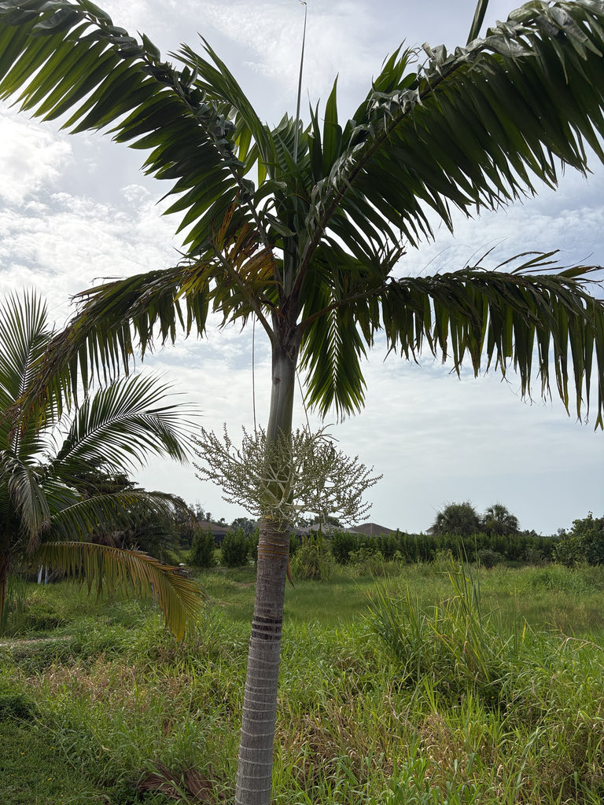

- That smoothie bowl in your Instagram feed starts here. The açaí 'berry' is technically a drupe, and the part people eat is a thin layer of purple pulp — the seed accounts for about 85% of the fruit's weight. All that flavor and antioxidant punch from a sliver of flesh.
- Unlike most palms, which die if you cut their growing tip, the Açaí Palm survives heart-of-palm harvest precisely because it is a clumper. Remove one stem's heart and the clump keeps growing — a rare case where harvesting the heart of a palm can actually be sustainable.
- The deep purple of the açaí drupe comes from a dense load of anthocyanins — the same class of pigments found in blueberries and red cabbage. In plants generally, anthocyanins double as photoprotective shields, absorbing excess light energy and scavenging cell-damaging free radicals.
- In açaí the concentration is high enough that researchers have measured its antioxidant capacity above that of most other commercially eaten fruits.
- The genus name Euterpe comes from the Greek muse of music and lyric poetry. The species name oleracea is Latin for 'vegetable-like' or 'edible as a vegetable' — a nod to the same word that gives us Brassica oleracea, the species that includes cabbage, kale, and broccoli.
The Açaí Palm is native to the floodplains, estuaries, and seasonally flooded várzea forests of the Amazon Basin, with its greatest concentration in the Brazilian states of Pará, Amapá, and Maranhão. It also occurs in Guyana, Suriname, Trinidad, and neighboring countries across lowland tropical South America.
In its home range it is a wetland specialist — one of the few palms that thrives in permanently waterlogged soils and survives regular flooding. It is not naturally adapted to well-drained upland sites, which shapes how it performs in Florida cultivation.
The palm reached Florida ornamental horticulture as a specialty tropical, suited to the warmest zones of the state (USDA Zones 10B–11). It is grown here primarily as an ornamental and as a living example of one of the world's most economically significant tropical palms.
- Few plants have gone from regional staple to global superfood as quickly as this one. Açaí berries were a dietary cornerstone for riverside communities in the Amazon estuary long before the outside world noticed them; by the early 2000s, demand abroad had turned the fruit into one of the most valuable non-timber forest products of the entire Amazon region.
- The clumping habit that makes this palm so distinctive is also what makes it ecologically instructive to compare with its close relative, the Juçara Palm (Euterpe edulis). Açaí is a clumper — cut one stem for heart of palm and the remaining stems keep producing fruit, making harvest genuinely sustainable. Juçara is single-stemmed: cut it and the plant dies.
- That biological difference goes a long way toward explaining why destructive harvest nearly wiped out Juçara across Brazil's Atlantic Forest, and why Açaí has largely replaced it as the commercial source of palm hearts.
- The fruit itself is oddly humbling in person. What looks like a plump berry is mostly seed — about 85% of the drupe's weight is a single large pit, leaving only a thin layer of dark purple pulp.
- Getting that pulp to your smoothie bowl is a race against time. Harvesters known as peconheiros climb these slender, swaying trunks — sometimes 50 feet or more — using nothing but a looped rope called a peconha cinched around their feet, shimmying up without a ladder or safety gear.
- Once a bunch is cut, the clock starts immediately: the thin pulp begins to oxidize and ferment within hours of harvest, and quality degrades fast enough that processors aim to handle the fruit within 12 to 24 hours. That extreme perishability is the entire reason you have never seen a fresh açaí berry in a grocery store — every cup and bowl outside the Amazon is built from flash-frozen pulp.
In the Amazon, the Açaí Palm is a keystone food source. Its fruit feeds more than 50 bird species as well as mammals including tapirs, monkeys, and fish in flooded forests where fallen fruit drops directly into the water. The inflorescences attract bees, beetles, and other pollinators, and the dense stands provide nesting and roosting habitat for birds.
In Florida cultivation, its wildlife value is more modest and has not been formally studied. The branched inflorescences can attract generalist pollinators when in bloom.
Because this palm has no co-evolutionary history with Florida's fauna, it does not function as a larval host for local butterflies or moths; visitors looking for the park's strongest native pollinator habitat will find it among the Florida native plantings.
Propagated by seed and by division of clump offsets (basal suckers). The palm is monoecious — male and female flowers appear on the same inflorescence — so a single clump can set fruit without a second plant nearby.
Large, branched, pendulous inflorescences emerge below the crownshaft and bear hundreds of small brownish-purple male and female flowers on the same panicle. Flowering can occur across the warmer months in tropical cultivation.
Round drupes about 1.5 cm (roughly 0.6 inch) in diameter; green when immature, ripening to a deep blackish-purple. Each contains a single large seed that makes up roughly 85% of the fruit's total weight. Fruit clusters can be large and conspicuous, hanging below the crownshaft.
Pinnately compound, arching, and gracefully drooping — typically 9 to 15 per crown, each up to about 13 feet long. Leaflets are narrow and taper to a point, giving the crown a feathery, open appearance. They emerge from a smooth, prominent green-to-bluish-green crownshaft at the top of each stem.
Multiple slender stems rise from a shared base, each ringed with pale leaf-scar bands on a gray-brown surface. Individual stems are slender — roughly 6 to 8 inches in diameter — and can lean outward from the clump as new stems push up from the center.
The silhouette gives it away: instead of a single trunk, look for a cluster of slender stems rising together, each topped with its own crown of arching, drooping fronds and a smooth greenish crownshaft. Scan the base of the fronds for the hanging, branched fruit clusters — heavy with small dark-purple drupes when in fruit.
Up close, notice how the stems lean slightly outward as the clump fills in, and look for the neat pale rings on the gray trunk where old fronds once attached.
Then pause and listen: because the leaflets hang straight downward like wet fringe rather than standing out stiffly, a light breeze sets them swaying gently against one another — the sound is a soft, almost rain-like swish, quite different from the sharp dry rustle of most palms.
The fruit is edible — açaí berries are widely consumed worldwide — but fresh fruit is highly perishable and what you see on the tree is not ready-to-eat in the way a ripe mango would be. Commercially processed açaí (frozen pulp, dried powder, juice) is safe and non-toxic. The palm itself is not toxic to people, dogs, or cats, and poses no notable handling hazard.
The Açaí Palm is among the most cold-sensitive palms in cultivation. Growth slows noticeably in cool weather, and temperatures at or below about 5°C (41°F) can kill the plant outright — frost is essentially fatal. Bradenton sits in USDA Zone 10A, which regularly sees winter lows that stress or kill specimens without a protective microclimate.
Any plant thriving here is doing so in a sheltered spot and is genuinely worth watching.
The name 'cabbage palm' occasionally applied to this species can cause confusion with Sabal palmetto, Florida's native cabbage palm and state tree, which is an entirely different plant. In this park, the name to use is Açaí Palm.


- © Randall Carter (CC-BY-NC), via iNaturalist